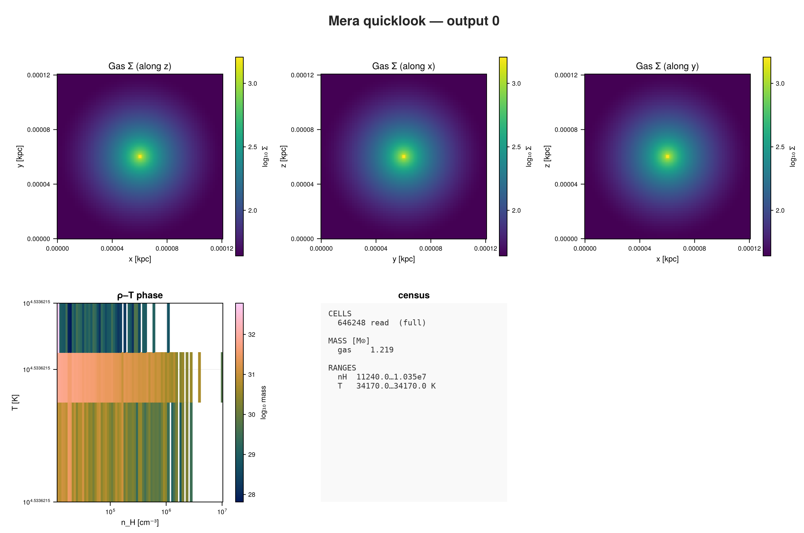
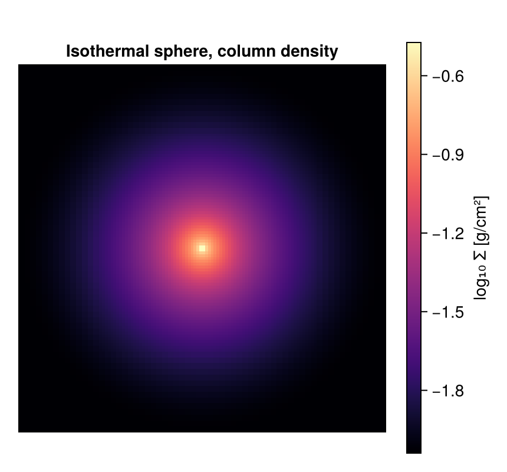

Chombo (PLUTO-AMR): First Inspection
This page is also an executable Jupyter notebook: open / download 41_chombo_First_Inspection.ipynb. The notebooks run end-to-end and double as part of Mera's test suite.
Chombo is not a simulation code. It is an adaptive-mesh-refinement framework that supplies the grid hierarchy and the HDF5 output several codes are built on, PLUTO's AMR mode among them. Mera reads that layout, so a code writing Chombo output is readable whether or not Mera knows the code itself.
The run here is a collapsing isothermal sphere: a dense core, refined where the gas is densest.
It is the IsothermalSphere sample from the yt project, so everything below is reproducible:
curl -O https://yt-project.org/data/IsothermalSphere.tar.gz
tar xzf IsothermalSphere.tar.gz1. One call to see everything
quicklook reads the gas, projects it along each axis, builds a density-temperature diagram and prints a summary. Unlike many formats, this one already stores its data in CGS, so there are no unit constants to supply.
using Mera, CairoMakie
path = "/Volumes/FASTStorage/Simulations/Mera-Tests/CHOMBO/chombo_3d/IsothermalSphere"
ql = quicklook(0; path=path);*__ __ _______ ______ _______
| |_| | | _ | | _ |
| | ___| | || | |_| |
| | |___| |_||_| |
| | ___| __ | |
| ||_|| | |___| | | | _ |
|_| |_|_______|___| |_|__| |__|
Mera v2.0.0-DEV | Julia 1.12.7 | 8 threads
[Mera]: quicklook output 0, reading gas: 2026-09-15T19:34:31.787
1 CPU file(s), levels 5-7 of 7 (full resolution)
projecting 3 gas map(s) [z, x, y] and the phase diagram from 646248 cells
┌─ Mera quicklook ── output 0 (CHOMBO) ───────────────
│ box : 0.0001205 kpc levels 5–7 (finest 0.0009413 pc)
│ grid : ndim 3 · ncpu 1 · nvarh 6
│ time : 0.0 Myr (non-cosmological)
│ read : 646248 cells (full resolution)
│ gas mass : 1.219 M⊙
│ nH range : 11240.0 … 1.035e7 cm⁻³
│ T range : 34170.0 … 34170.0 K
└─ 7.29 s ──────────────────────────────────
[Mera]: quicklook output 0 finished: 2026-09-15T19:34:37.811quicklookplot(ql)
A dense core in the middle of a small box. The numbers are physical straight away: about 1.2 solar masses inside 0.12 parsec.
2. The details: getinfo
info = getinfo(0, path);Code: CHOMBO (PLUTO-AMR / Orion format)
output: 0 time: 0.0 [code units]
AMR levels 5–7 boxlen = 3.71787206996e17
components: (density, X-momentum, Y-momentum, Z-momentum, X-magnfield, Y-magnfield, Z-magnfield, energy-density, gravitational-potential)
variables: (rho, vx, vy, vz, p, gpot)
-------------------------------------------------------
[Mera]: composition not recorded by this format; using X = 0.76, mu = 1.32 (RAMSES convention) for :nH and :T. Change with setcomposition!(info; X_frac=…, mu=…).info.simcode, info.levelmin, info.levelmax, info.variable_list("CHOMBO", 5, 7, [:rho, :vx, :vy, :vz, :p, :gpot])Note the level range. This is a refined grid, not a uniform one, so cells exist at more than one resolution. The box itself is small:
info.boxlen * info.scale.pc # box size in parsec0.120488028059553573. What else could be loaded?
capabilities(info)2-element Vector{Symbol}:
:info
:hydroChombo files carry gas. This particular run also stored the gravitational potential, which shows up as an ordinary variable rather than a separate data type.
4. Load the gas
gas = gethydro(info);[Mera]: CHOMBO AMR → 646248 leaf cells, levels 5–7, vars rho, vx, vy, vz, p, gpot5. What the data looks like
One table, one row per cell.
gas.dataTable with 646248 rows, 10 columns:
Columns:
# colname type
────────────────────
1 level Int32
2 cx Int32
3 cy Int32
4 cz Int32
5 rho Float64
6 vx Float64
7 vy Float64
8 vz Float64
9 p Float64
10 gpot Float64Compared with a uniform grid there is one extra column: level. Each cell records which refinement level it belongs to, and its position and size follow from that:
cell centre = (c - 0.5) * boxlen / 2^level
cell size = boxlen / 2^levelSo the table holds cells of different sizes side by side, with no resampling onto a common grid.
amroverview(gas)Counting...Table with 3 rows, 3 columns:
level cells cellsize
─────────────────────────
5 0 1.16184e16
6 207272 5.80918e15
7 438976 2.90459e15amroverview is the quickest way to see the refinement: how many cells sit at each level and how big they are. Level 5 is the base grid and holds nothing here, because every one of its cells was refined away. The finer cells are exactly half the size of the coarser ones, and most of the data sits at the finest level, which is where the collapsing core is.
6. Physical quantities
Ask for anything by name, in any unit.
msum(gas, :Msol) # total gas mass1.2192374338591871extrema(getvar(gas, :rho, :nH)) # hydrogen number density, cm^-3(11244.756676104671, 1.0351161344590483e7):nH converts a mass density to a hydrogen number density, which needs the hydrogen mass fraction. No simulation format records it, so Mera starts from the RAMSES value, X = 0.76. If your run assumes something else, say so once and everything downstream follows:
setcomposition!(info; X_frac=0.711, mu=0.614) # for example, PLUTO defaultsThe temperature here is flat, 25970 K per unit μ in every cell, because this is an isothermal sphere. That is also why the phase diagram above is a single line rather than a cloud: the setup fixes the temperature, so there is no thermal structure to show.
extrema(getvar(gas, :gpot)) # the stored gravitational potential(-1.5574393185966113e9, -177954.43640389142)7. A projection
Column density along z. Mera projects the refined cells directly: a cell contributes to the map over the area it actually covers, so nothing is resampled onto a coarse grid first.
proj = projection(gas, :sd, :g_cm2, direction=:z);
size(proj.maps[:sd])[Mera]: 2026-09-15T19:34:57.003
domain:
xmin::xmax: 0.0 :: 1.0 ==> 0.0 [mpc] :: 120.488 [mpc]
ymin::ymax: 0.0 :: 1.0 ==> 0.0 [mpc] :: 120.488 [mpc]
zmin::zmax: 0.0 :: 1.0 ==> 0.0 [mpc] :: 120.488 [mpc]
Selected var(s)=(:sd,)
Weighting = :mass
Effective resolution: 128^2
Map size: 128 x 128
Pixel size: 0.941 [mpc]
Simulation min.: 0.941 [mpc]
Available threads: 8
Requested max_threads: 8
Variables: 1 (sd)
Processing mode: Sequential (single thread)(128, 128)fig = Figure(size=(430, 400))
ax = Axis(fig[1,1]; title="Isothermal sphere, column density", aspect=DataAspect())
hidedecorations!(ax)
hm = heatmap!(ax, log10.(proj.maps[:sd]'); colormap=:magma)
Colorbar(fig[1,2], hm, label="log₁₀ Σ [g/cm²]")
fig
Where to go next
The same five calls as on any other code: quicklook, getinfo, gethydro, getvar, projection. The only thing that changed is that the cells come at more than one size, and nothing downstream had to be told.
From here every tutorial on this site applies unchanged: sub-regions, profiles, phase diagrams, movies and off-axis projections all work on this table.